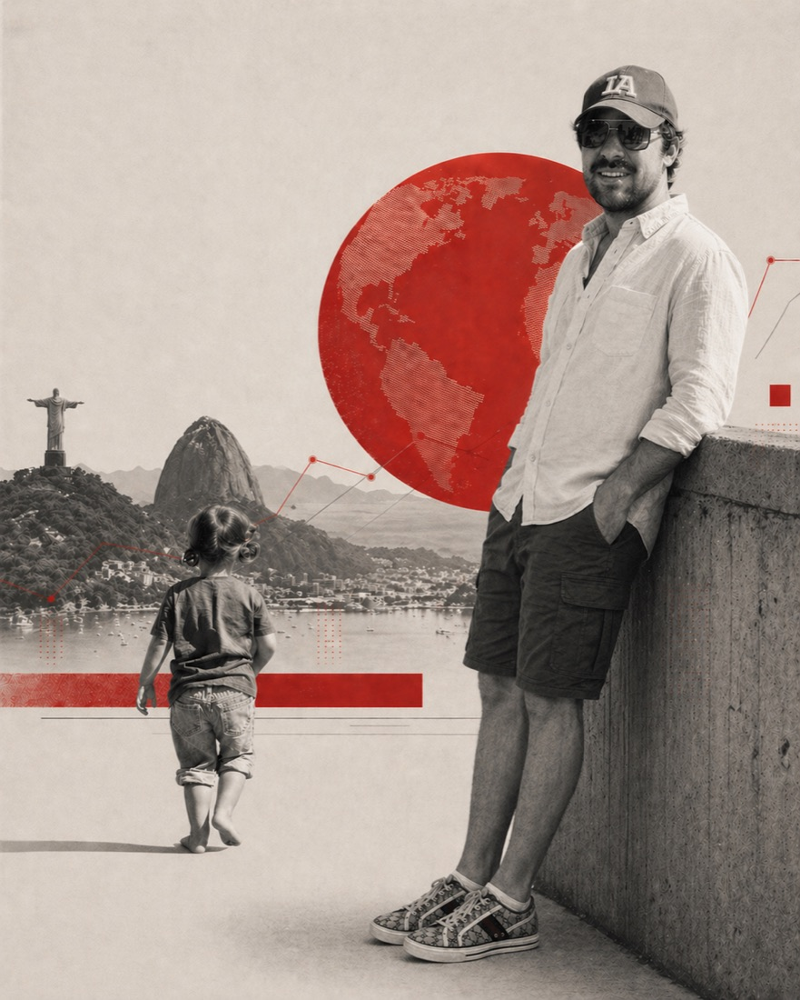

03 — Remote
Работаю удалённо.
Базируюсь во Флорианополисе.
Удалённый формат — основной с 2022 года. Сейчас веду сервис персонального сопровождения по здоровью из Флорианополиса, команда в Москве. До этого были Турция, Европа.
Шесть часов разницы с Москвой это скрытое преимущество. Когда Москва заканчивает день, у меня ещё рабочее время: несколько спокойных часов, чтобы разобрать цифры, принять решения и подготовить команде следующий ход. Хороший процесс не требует постоянного присутствия. Ему нужен ритм.